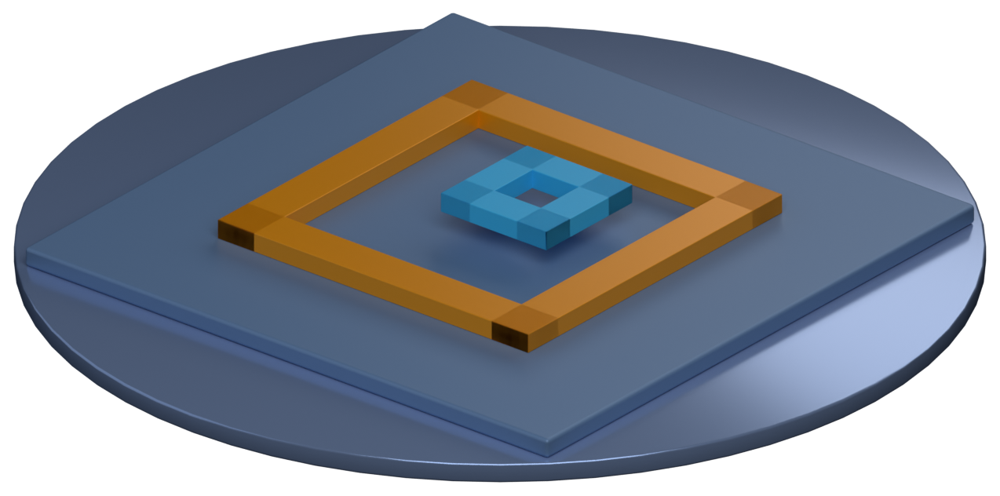
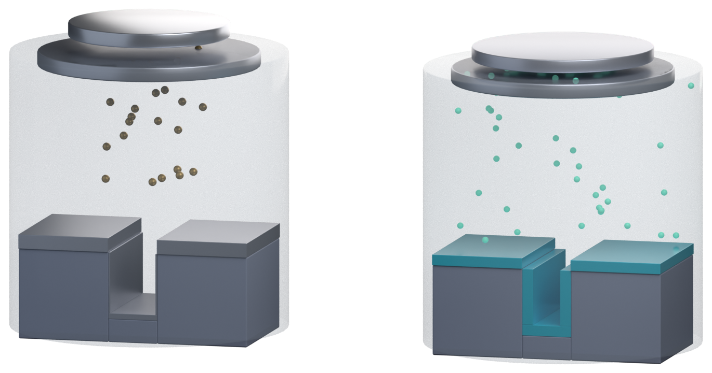
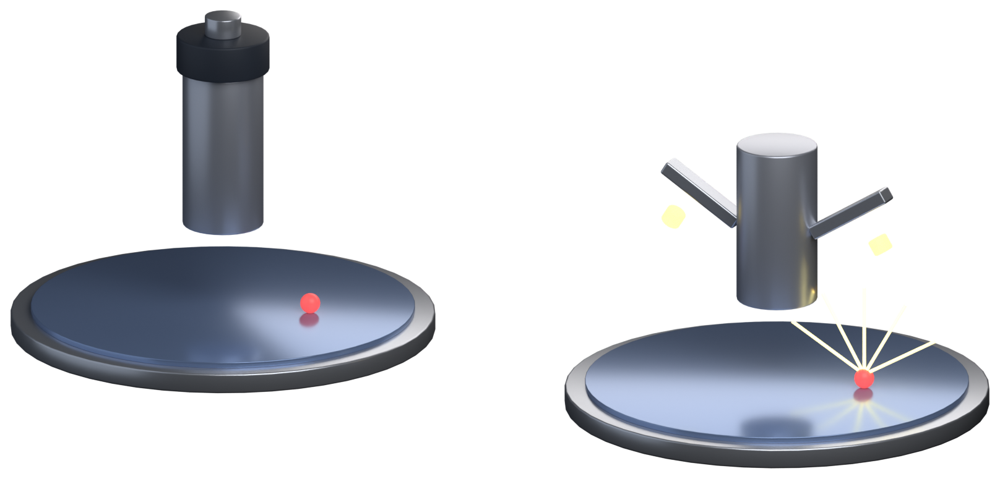

量检测图鉴
明场、暗场、套刻、沉积、颗粒——这几样是产线上每天都要打交道的东西。这一页把它们的「原理长什么样」和「数据怎么读」放在一起，当成一份可以随时翻的笔记。
01套刻：两层对没对上
套刻（overlay）量的不是这一层做多宽，而是这一层相对上一层偏了多少。工艺上每加一层都要对准前一层，对不准，后面的通孔就接不上。

读数怎么来的
量测机台读的是两个方向的偏差：ΔX 和 ΔY，单位通常是纳米。有的机台还会给出残差（residual）和放大率误差。
什么样的数算好
- 先进节点：overlay 预算常在 2–4 nm 量级，约等于线宽的一小部分
- 成熟节点：可以放宽到十几 nm
- 判断标准是相对设计规则，不是绝对数——同一个 3 nm，对 7 nm 节点可能已经超规
- 看数时先确认：这是单点还是整片统计（均值 / 最大值 / 3σ）
容易混的两件事：CD 量的是「这一层做多宽」，overlay 量的是「这一层对没对上」。前者是尺寸误差，后者是位置误差——修法完全不同：CD 偏了调曝光剂量，overlay 偏了调对准。
02沉积：材料怎么落到晶圆上
PVD 和 CVD 的差别，在平坦表面上几乎看不出来，一到台阶和沟槽就原形毕露。

PVD（溅射）
- 靶材被离子轰击，原子飞到晶圆上
- 方向性强 → 台阶侧壁薄、底部更薄（阴影效应）
- 适合：金属层、阻挡层
- 改进手段：加热基片、加偏压、旋转台
CVD / ALD
- 气体在表面反应生成薄膜，不是「飞」过来的
- 保形性好 → 台阶、沟槽、通孔都能均匀覆盖
- ALD 一层一层长，最均匀但最慢
- 适合：介质层、阻挡层、高 k 栅氧
看图的诀窍：判断一种沉积工艺保形不保形，就看侧壁厚度 ÷ 顶面厚度这个比值。接近 1 是保形，远小于 1 就是方向性沉积。
03明场 vs 暗场：同一颗颗粒，两种看法
同样是光学检测，照明的角度不同，看到的图像几乎相反。
明场（Brightfield）
照明与成像同轴。平整处把光原样反射回来 → 背景亮；颗粒把光散射走 → 局部变暗。
暗场（Darkfield）
照明是斜的，平整处的反射光进不了物镜 → 背景暗；只有颗粒把光散射进物镜 → 亮点。
一句话记法：明场看「少了什么」，暗场看「多了什么」。所以查残留、缺角用明场，查颗粒、微划伤用暗场。

04颗粒检测：看得见，还要数得清
暗场成像是「看得见颗粒」，颗粒检测（particle count）是「数得清、量得出多大」。
为什么能测尺寸
- 颗粒越大，散射光越强
- 用标准颗粒（已知尺寸的球）标定，就能把信号换算成尺寸
- 所以报的是等效球径，不是颗粒的真实形状
数据怎么读
- 通常输出每片多少个 + 尺寸分布，不是图像
- 关注新增颗粒数（与上一道工序比），而不是绝对总数
- 颗粒落在图形区还是边缘，影响完全不同
和暗场的分工：暗场负责「这一片有没有问题、大概在哪」，颗粒检测负责「有多少、多大、从哪道工序带进来的」。前者是找位置，后者是追来源。
05把这几个数放在一起看
CD
这一层做多宽。偏了调曝光剂量。
Overlay
这一层对没对上。偏了调对准。
膜厚
这一层多厚。偏了调时间/流量。
缺陷密度
这一片有多脏。高了追前道工序。
四个数各自独立，但会互相牵连：膜厚变了，CD 可能跟着变；overlay 超规，通孔电阻就会飘。产线上把它们放在同一张趋势图里看，才能判断是「某一台机台的问题」还是「整条线的漂移」。
本页的 3D 图由 fabkit 生成；原理图用 SVG 手绘，便于随主题换色。